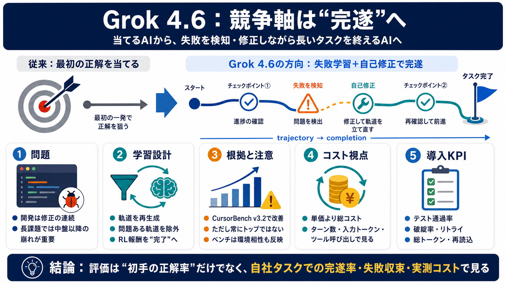

Grok 4.6 returns SpaceXAI to the intelligence frontier and leads on ...
➤ Frontier-level intelligence at lower cost: Headline pricing is unchanged from Grok 4.5 at $2/$6 per 1M input/output to…

記事の主張は「Grok 4.6は“当てる”より“失敗を学習して完遂する”方向へ、学習と評価の重心が移った」という点です。（学習の日本語：学習＝トレーニング / training）
LLMの価値は「最初から正解を出す能力」だけでなく「間違いを検知して直しながら長い作業を終える能力」にあります。長課題で中盤以降の崩れを抑えることが、実務では重要です。
記事では、モデルの出力を単発ではなく「作業の軌道（途中の判断と修正の連鎖）」として捉えます。問題のある軌道を避け、強化学習の報酬も“タスク完了”に寄せることで、自己修正が増える狙いです。
Grok 4.6は、短期間のアップデートでも「長いコーディングで頻繁に自己チェックし、誤りを早めに修正し続ける」傾向が学習されたとされています。補助的な追加学習と、重み更新の最適化手順（学習レシピ）の変更が述べられます。
記事では、Grok 4.5を起点に多様な推論設定や領域（STEM、ソフトウェア工学、ナレッジワーク等）で“軌道”を再生成したと述べます。さらにモデルベースのチェックで問題ある軌道を除外し、強化学習でタスク完了を報酬として伸ばす流れです。
CursorBench v3.2では改善し、複数の試験で上位に食い込む一方、DeepSWEやTerminal-Benchなどで相変わらず優位なモデルが残る、と記事は注意します。つまり“常にトップ”ではありません。
評価ベンチマークは“実際の開発環境”に依存し、単純比較しにくいと記事は強調します。CursorBenchがCursor環境で評価されるなら、モデルの得意不得意（ツール操作・ワークフロー）も反映され得ます。
記事は、APIのトークン単価が安くても、ツール呼び出し回数・ファイル再読込・やり直しで総コストが増える、と述べます。逆に高価でも少ないステップで完了なら、結果的に安くなり得ます。
AA-Briefcaseのような長時間・職業タスク系ベンチマークでは、Grok 4.6がClaude Opus 5 Maxより「ターン数と入力トークン消費」が少なかった差が紹介されています。単価だけではなく、実際の消費量で見る重要性が補強されます。
提供面ではSpaceXAI APIに加え、OpenRouter、Vercel、Cloudflare、Grok BuildやCursor経由など複数経路で使えるとされています。さらにチャットボットから“長期稼働エージェント”を支えるインフラへ進む姿勢が読み取れる、という位置づけです。
記事の結論を鵜呑みにせず、自社タスクの長さ、ツール連携の有無、必要な品質指標（例：テスト通過率等）、実測コスト（ターン数・総トークン・失敗率）を揃えて検証するのが確実です。
Grok 4.6は「失敗を学習して修正しながら長く前進する」方向に設計され、長課題での改善が示されています。ただしベンチマーク環境依存と総コストの測り方には注意が必要です。（注意＝慎重に扱う / caution）
➤ Frontier-level intelligence at lower cost: Headline pricing is unchanged from Grok 4.5 at $2/$6 per 1M input/output to…
The performance jump appears to come off the same base model as Grok 4.5, and pricing hasn't moved — $2 per million inpu…
The page also includes a table. On Terminal-Bench v3.0, Grok 4.6 scores 26%. GPT-5.6 Sol Max scores 34.6%. Fable 5 Max s…
The company also reported increased self testing and verification during longer tasks, along with stronger initial resul…
Right. So, Grock 4.6 just launched on August 12, 2026. And officially, it matches GPT 5.6 Soulmax with a 61 score on the…